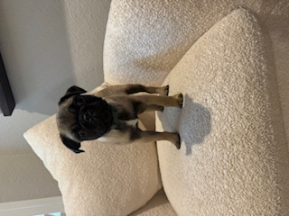

Alex Escshbach
Communications and research professional with advanced academic training in journalism and mass communication. Experienced in translating complex research into clear, accessible content; supporting editorial workflows; conducting policy-adjacent research; and coordinating multi-stakeholder projects. Strong background in writing, editing, fact-checking, and project organization, with a demonstrated commitment to equity-centered, research-informed public communication.
Education
- Doctor of Philosphy (ABD), Communication - University of Oklahoma
- Masters of Arts, Journalism - University of Oklahoma
- Master of Professional Writing - University of Oklahoma
- Bachelor of Arts, Professional Writing - University of Oklahoma
Skills
- Copy-editing and fact-checking
- Research-based writing
- Plain-language translation
- AP-style familiarity
- Editorial feedback and revision
- Literature and policy research
- Information synthesis
- Source evaluation and verification
- Project coordination
- Content tracking and organization
- Deadline management
- Stakeholder communication
- Microsoft Word, PowerPoint, Excel
- Learning management systems
- Collaborative digital workflows